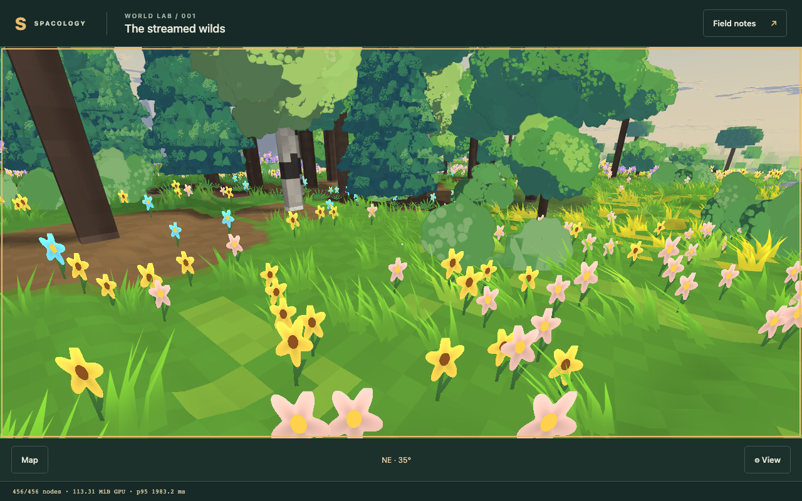

Integrated default
The ferrite catchment
Explore the combined terrain, drainage, mountain forms, vegetation and rendering work. Switch ground, grass and distant-tree looks in View; use Performance for live timings.